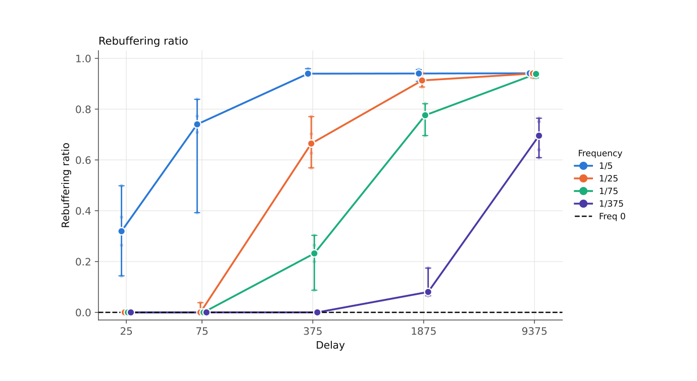

01 / Network measurement · Research
Internet Quality Thresholds
A testbed that finds how much packet delay it takes to stall YouTube Live.
No hosted demo: it needs three machines. Figures are from the paper.
- Problem
- Internet quality scores (M-Lab IQB, Cloudflare AIM, IETF QoO) need thresholds for when latency makes an app unusable. Today those thresholds come from expert opinion.
- What I owned
- First author, with Prof. Ranysha Ware. I built the three-machine testbed, wrote the C program that delays packets through NFQUEUE, and automated the sweeps and analysis. In NetGent I wrote the YouTube Live and Twitch workflows and changed the playback logger.
- Result
- No added delay: 0% rebuffering. 25 ms on one packet in five: 15–50% rebuffering, median 31.9% over four runs. Accepted as a poster paper at ACM CoNEXT 2026.


Key decision
Pin the stream to 1080p. Sample the player every 0.1 s.
- Why
- With resolution fixed, delay can only show up as buffering. Logging every 0.1 s instead of every 2 s catches stalls shorter than a second.
- Trade-off
- It hides how adaptive bitrate would lower quality to avoid stalls. The sweep covers 5 delays × 4 frequencies to limit load on YouTube, so small effects can be missed.
Evidence: commit 667139f, “log every 0.1s instead of 2s.”